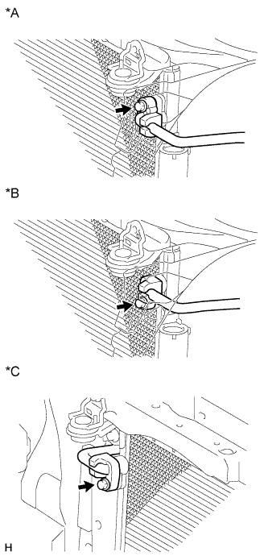
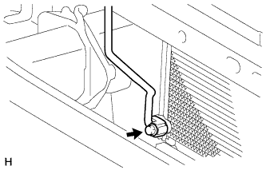
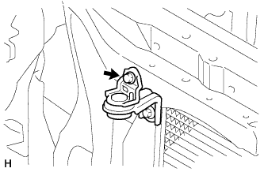
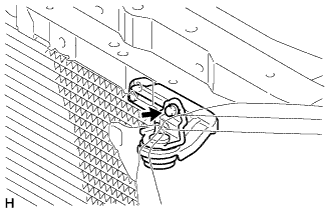
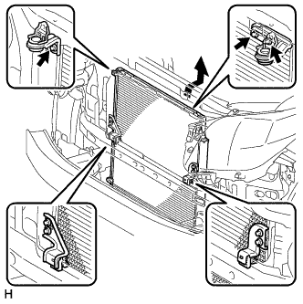
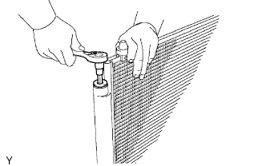
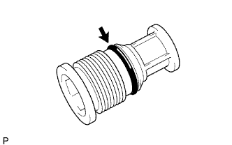
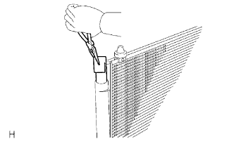

КОНДЕНСАТОР > СНЯТИЕ |
| 1. СЛЕЙТЕ ОХЛАЖДАЮЩУЮ ЖИДКОСТЬ ДВИГАТЕЛЯ |
Для моделей с 1GR-FE:
Слейте охлаждающую жидкость двигателя (Нажмите здесь).
Для моделей с 2TR-FE:
Слейте охлаждающую жидкость двигателя (Нажмите здесь).
Для моделей с 1KD-FTV с DPF:
Слейте охлаждающую жидкость двигателя (Нажмите здесь).
Для моделей с 1KD-FTV без DPF:
Слейте охлаждающую жидкость двигателя (Нажмите здесь).
Для моделей с 5L-E:
Слейте охлаждающую жидкость двигателя (Нажмите здесь).
| 2. СНИМИТЕ РАДИАТОР В СБОРЕ |
Для моделей с двигателем 1GR-FE:
Снимите радиатор в сборе (Нажмите здесь).
Для моделей с 2TR-FE:
Снимите радиатор в сборе (Нажмите здесь).
Для моделей с 1KD-FTV с DPF:
Снимите радиатор в сборе (Нажмите здесь).
Для моделей с 1KD-FTV без DPF:
Снимите радиатор в сборе (Нажмите здесь).
Для моделей с 5L-E:
Снимите радиатор в сборе (Нажмите здесь).
| 3. СОБЕРИТЕ ХЛАДАГЕНТ ИЗ СИСТЕМЫ ОХЛАЖДЕНИЯ |
Запустите двигатель.
Включите компрессор системы кондиционирования в следующих условиях:
| Параметр / Устройство | Состояние |
| Частота вращения коленчатого вала двигателя | Холостой ход |
| Время работы | 3 мин или более |
| Состояние выключателя системы кондиционирования | Вкл |
| Состояние переключателя вентилятора | HI |
| Заданная температура | MAX COOL |
Выключите двигатель.
Соберите хладагент из системы кондиционирования с помощью установки регенерации хладагента.
| 4. ОТСОЕДИНИТЕ ТРУБОПРОВОД ВЫСОКОГО ДАВЛЕНИЯ В СБОРЕ |
|  |
Выверните болт и отсоедините трубопровод высокого давления от конденсатора системы кондиционирования.
| *A | для моделей с 1GR-FE |
| *B | для моделей с 2TR-FE |
| *C | для моделей с двигателями 1KD-FTV, 5L-E |
Снимите с трубопровода высокого давления кольцевое уплотнение.
| 5. ОТСОЕДИНИТЕ ТРУБКУ СИСТЕМЫ КОНДИЦИОНИРОВАНИЯ В СБОРЕ |
|  |
Выверните болт и отсоедините трубку системы кондиционирования в сборе от конденсатора системы кондиционирования.
Снимите кольцевое уплотнение с трубки системы кондиционирования в сборе.
| 6. ОТСОЕДИНИТЕ КРОНШТЕЙН КОНДЕНСАТОРА СИСТЕМЫ КОНДИЦИОНИРОВАНИЯ № 1 |
|  |
Выверните болт и отсоедините кронштейн конденсатора системы кондиционирования № 1.
| 7. ОТСОЕДИНИТЕ КРОНШТЕЙН КОНДЕНСАТОРА СИСТЕМЫ КОНДИЦИОНИРОВАНИЯ № 2 |
|  |
Выверните болт и отсоедините кронштейн конденсатора системы кондиционирования № 2.
| 8. СНИМИТЕ КОНДЕНСАТОР СИСТЕМЫ КОНДИЦИОНИРОВАНИЯ В СБОРЕ |
|  |
Выверните 3 болта и снимите конденсатор системы кондиционирования, как показано на рисунке.
| 9. СНИМИТЕ ОСУШИТЕЛЬ СИСТЕМЫ КОНДИЦИОНИРОВАНИЯ |
|  |
С помощью торцевой шестигранной головки на 14 мм снимите крышку с модулятора.
|  |
Снимите с крышки кольцевое уплотнение.
|  |
С помощью плоскогубцев извлеките осушитель системы кондиционирования.